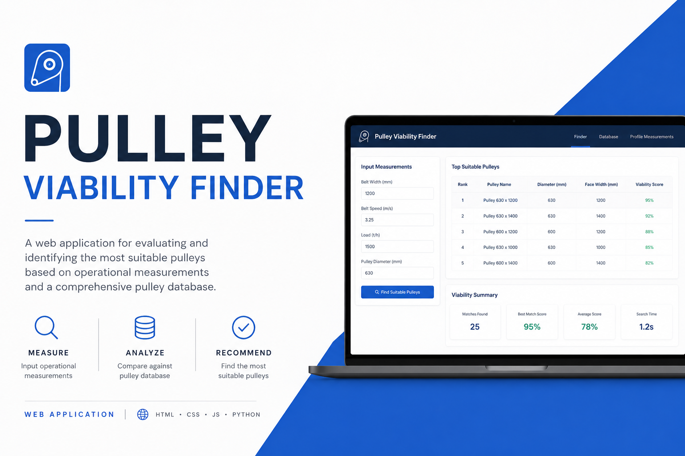

Pulley Viability Finder
Custom web application developed during my cadetship at Carmen Copper Corporation to assess belt conveyor pulley conditions using profile measurement data. Includes a CMS interface and database of pulley specifications.